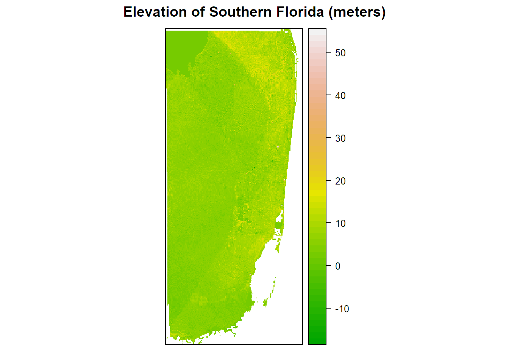
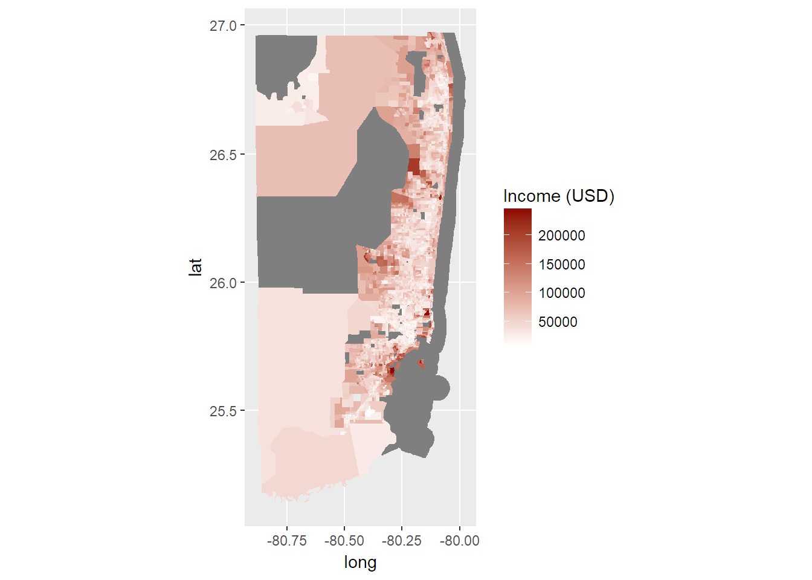

Projected impacts of sea level rise (under different scenarios) along the US coast may demonstrate differential impacts in affected demographic groups. In this project, I look at three Florida counties that cover the extensive stretch of the Miami urban area: Miami-Dade County, Broward County, and Palm Beach County. I compare projected spatial impacts of sea level rise to spatial socio-economic data from the US 5-year American Community Survey (ACS) to detect any possible correlations between sea-level rise (and subsequent risk from storm surges) and socio-economic indicators. An investigative article published through the group Climate Central details how rising sea levels and flooding in Atlantic City is disproportionately affecting low-income residents, and suggests that this may be the case in other coastal US cities (Upton, 2017). Additionally, this year we have seen tremendous damage from hurricanes in the Caribbean and Gulf of Mexico. The increasing frequency of strong hurricanes likely relates to climate change, and this will couple with rising sea levels in causing further damage to coasts and islands in the future. I hypothesized initially that I would find find greater levels of flood/storm surge risk to lower-income neighborhoods, and perhaps to ethnic minority neighborhoods, or that I might find the exact opposite due to high-value coastal properties, but predicted that I would find a weaker correlation for middle-income communities. There are also significant human elements that impact overall vulnerability to flood damage, including man-made systems for controlling flows of water, building materials, permeability of the ground, insurance coverage, and others, but I did not include them in this study.
My approach to addressing my research question entailed several steps, as outlined below. In short, the approach was to access both elevation and income data for the three Florida counties, and compare the two based on projected sea level rise scenarios.
I loaded the following packages in order to complete the project:
library(dplyr)
library(ggplot2)
library(maps)
library(spocc)
library(knitr)
library(tidyr)
library(raster)
library(rasterVis)
library(scales)
library(rgeos)
library(maptools)
library(sp)
library(rgdal)
library(sf)
knitr::opts_chunk$set(cache=TRUE) # cache the results for quick compilingus=getData('GADM', country='USA', level=2)
fl1<-subset(us,NAME_1=="Florida")
brwd<-subset(fl1,NAME_2=="Broward")
mi_da<-subset(fl1,NAME_2=="Miami-Dade")
plmbch<-subset(fl1, NAME_2=="Palm Beach")
comb<-rbind(brwd,mi_da,plmbch)dem_fl<-getData("SRTM",lon=-82.5,lat=27.5)
miami_mask<-mask(dem_fl,comb)
miami_cropmask<-crop(miami_mask,comb)
spplot(miami_cropmask, main="Elevation of Southern Florida (meters)")
Third, I created a simple set of side-by-side plots showing the land under three different elevations, based on the storm surge and sea level rise projected scenarios. My attempts to locate historical storm surge ranges for the three counties yielded very little information. I was only able to find a list from the National Weather Service stating that the largest storm surge in Florida was 15ft in 1926, and an article (cited below) that looks at prehistorical storm surge evidence for the Gulf Florida coast, suggesting that storm surges could potentially be far worse than anticipated. With the difficulty of finding an exact storm surge range for these counties, I substituted ranges known ranges from Bangladesh in order to complete the model (Karim & Mimura, 2008).
Next, I created a map of the socio-economic data (in this case, just income data). I downloaded the block group boundaries from TIGER for all of Florida from 2015, and also downloaded an excel data file of median household income by block group for the 3 Florida counties from the US Census Bureau Factfinder website, from the 2015 ACS.
wd="C:/Users/Hannah/Documents/School/UB/R/Final Project/Data/Florida Data"
tiger_bg_bound<-readOGR(file.path(wd,"tl_2015_12_bg_2015FloridaBG"),layer="tl_2015_12_bg")## OGR data source with driver: ESRI Shapefile
## Source: "C:/Users/Hannah/Documents/School/UB/R/Final Project/Data/Florida Data/tl_2015_12_bg_2015FloridaBG", layer: "tl_2015_12_bg"
## with 11442 features
## It has 12 fields
## Integer64 fields read as strings: ALAND AWATERincome_3county <- read.csv(("ACS_15_5YR_B19013_with_ann.csv"),header = TRUE)income_map <- merge(tiger_bg_bound,income_3county,by.x="GEOID",by.y="GEO.id2")
income_map2 <- income_map[complete.cases(income_map@data), ]
income_map3 <- fortify(income_map2)## Regions defined for each Polygonsincome_map2$id <- row.names(income_map2)
income_map3 <- left_join(income_map3,income_map2@data,by="id")
income_map3$HD01_VD01 <- as.numeric(as.character(income_map3$HD01_VD01))## Warning: NAs introduced by coercionThe results of my methods detailed above are essentially two plots that can be visually compared for possible correlations:
spplot(stack(miami_cropmask<=2.76,miami_cropmask<=5, miami_cropmask<=10.97), main="Areas at Risk to Flooding under Three Sea Level Rise Scenarios Plus Storm Surge (2.76m, 5m, 10.97m")plot_income3 <- ggplot(income_map3,aes(x=long,y=lat,order=order,group=group,fill=HD01_VD01))+geom_polygon()+scale_fill_gradient(low="white",high="darkred",na.value = "grey50")+coord_map()
plot_income3
Currently, I am only able to visually compare the income and elevation data for the three scenarios. The hope was to be able to run a statistical comparison, and to bring in additional socio-economic factors. To do so, I would need to reconcile the two kinds of maps, because the boundary files are from different data sources (TIGER, versus GADM), so they may not map on to each other correctly. Thus, from what I have been able to map, I am unable to draw clear conclusions about the relationships between income and risk to flooding. However, what is very clear from having mapped the three scenarios for sea level rise is that under the most extreme scenario, almost all of Florida is affected by sea level rise, thus making the comparison to income by block group an irrelevant question. What is interesting in the second scenario is that most of the remaining unaffected area is the area of the largest population density, with instead the low-population areas being almost entirely affected by sea level rise (if the water is able to reach inland). This would likely affect farmland and conserved areas, but not many Florida residences. The question of correlations between affected areas and income/race might be most relevant for the second scenario, and it would also be helpful to look at agricultural production that would be affected.
Karim, M. F., & Mimura, N. (2008). Impacts of climate change and sea-level rise on cyclonic storm surge floods in Bangladesh. Global Environmental Change, 18(3), 490-500.
Kulp, S., & Strauss, B. H. (2017). Rapid escalation of coastal flood exposure in US municipalities from sea level rise. Climate Change, 142, 477-489.
Lin, N., Lane, P., Emanuel, K. A., Sullivan, R. M., & Donnelly, J. P. (2014). Heightened hurricane surge risk in northwest Florida revealed from climatological-hydrodynamic modeling and paleorecord reconstruction. Journal of Geophysical Research: Atmospheres, 119(14), 8606-8623.
Tebaldi, C., Strauss, B. H., & Zervas, C. E. (2012). Modelling sea level rise impacts on storm surges along US coasts. Environmental Research Letters, 7, 1-11.
Upton, J. (2017). The injustice of Atlantic City’s floods. http://reports.climatecentral.org/atlantic-city/sea-level-rise/